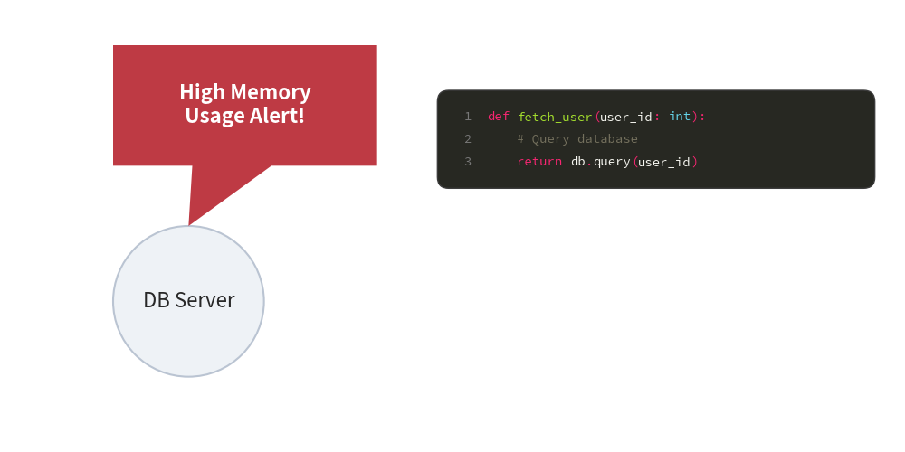

Speech & Code Blocks
Drawlib provides specialized components for embedding contextual annotations and syntax-highlighted source code:
bubblespeech: Creates comic callouts and speech bubbles with precise tail pointers.SourceCode: Embeds vector-rendered, syntax-highlighted code snippets with unified styling and language font support.
1. Quick Example: Alert Callout & Code Snippet

2. Speech Bubbles (bubblespeech)
The bubblespeech function creates a rectangular speech bubble with a triangular tail pointing toward a specific target coordinate:
bubblespeech(
xy: tuple[float, float], # Bottom-left corner of the bubble body
width: float, # Bubble body width
height: float, # Bubble body height
tail_edge: Literal["bottom", "top", "left", "right"],
tail_start_ratio: float, # Float in [0.0, 1.0] along edge
tail_end_ratio: float, # Float in [0.0, 1.0] along edge
tail_vertex_xy: tuple[float, float], # Exact target point coordinate
*,
style: Style,
text: str = "",
text_style: Style | None = None,
)
tail_edge: The side of the bubble where the tail originates ("bottom","top","left","right").tail_vertex_xy: The target coordinate where the arrowhead/tip points (e.g. the edge of a server node or bottleneck).
3. Syntax-Highlighted Code Blocks (SourceCode)
SourceCode renders syntax-highlighted code snippets directly as sharp vector shapes and text.
Unlike stateful SmartArts (Table, TreeNode), SourceCode is stateless: you draw code directly via SourceCode.draw(...) or the sourcecode(...) function alias.
Drawing Method
SourceCode.draw(
xy: tuple[float, float], # Top-left corner (x, y) of the code container
width: float, # Total container width
code: str | None = None, # Code string to render (or use `file`)
*,
styles: SourceCodeStyles, # Required style configuration
file: str | None = None, # Path to code file (alternative to `code`)
code_lang: str | None = None, # Language: "python", "json", "yaml", "sql", etc.
show_linenum: bool = False, # Whether to show line numbers in a gutter
r: float = 1.5, # Corner radius of the container box
)
Style Management (SourceCodeStyles)
Styles are configured via SourceCodeStyles.get(...) (or get_source_code_styles(...)) and can be patched via .patch():
from drawlib.smartarts import SourceCodeStyles
from drawlib.styles import Styles
# 1. Standard theme with Japanese CJK font (tofu prevention)
styles = SourceCodeStyles.get("default", font_lang="ja", textsize=11.0)
# 2. Built-in themes: "default", "monochrome", "dark", "google"
dark_styles = SourceCodeStyles.get("dark", font_lang="en")
# 3. Patch specific token styles
custom_styles = dark_styles.patch(
keyword=Styles.PrimaryBold,
comment=Styles.MutedItalic,
box_style=Styles.MutedDashed,
)
Reading External Files
You can load code directly using file="path/to/script.py" or retrieve the text via SourceCode.get_text():
# Direct rendering from file
SourceCode.draw((10, 80), width=80, file="src/main.py", styles=styles, show_linenum=True)
# Helper function
code_text = SourceCode.get_text("src/main.py")